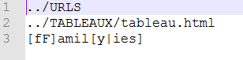
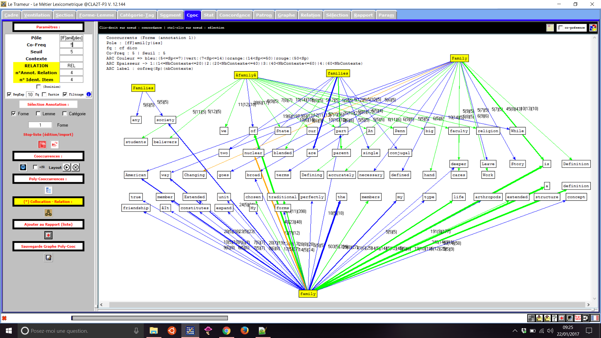
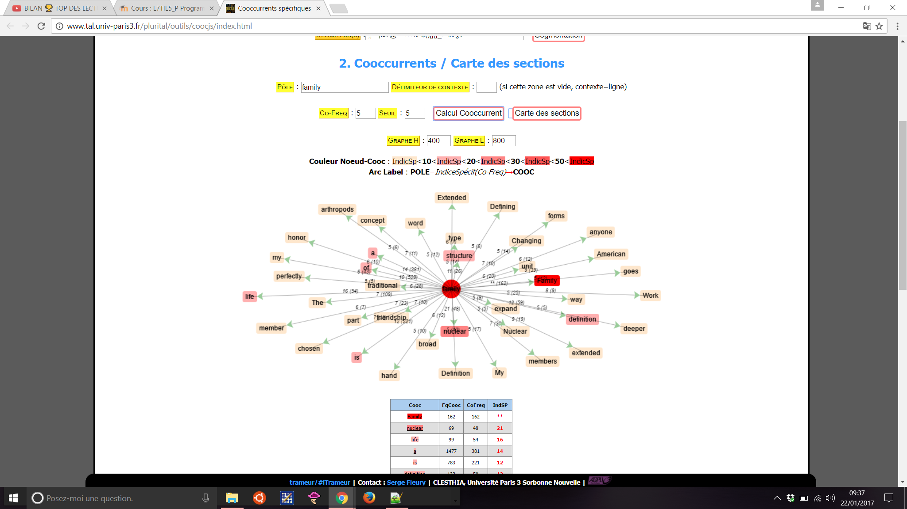

✽ ✽ ✽
✽ ✽ ✽
Pour ce projet, nous avions comme première tâche de constituer un corpus d'une cinquantaine d'URLS traitant de notre sujet. J'ai donc répertorié dans un fichier texte brut un bon nombre de sites internet traitant de la notion et de la définition anglophone du mot "family".
Bien que cette tâche n'ait pas représenté de grandes difficultés au niveau informatique, j'ai très rapidement pris conscience que mes résultats n'allaient pas être des plus objectifs car c'est moi qui, au final, sélectionnais les URLS. J'avais tendance à choisir des sites qui allaient vers une certaine analyse, qui reflétaient ma vision personnelle de la famille et donnaient une opinion proche de la mienne, ou dans tout les cas pas trop extrême. J'ai ensuite essayé, avec plus ou moins de succès, de trouver des sites différents, un peu plus variés.
Mon corpus final était composé de cinquante-quatre sites. Certains de ces sites sont des sites classiques de définitions, d'autres sont des articles d'actualité américaine, anglaise ou australienne parlant de la famille.
Ensuite, nous devions comprendre, utiliser et éventuellement modifier un script bash fourni par notre professeur. Je n'avais jamais fait de programmation avant et ce script était donc une première pour moi. J'ai travaillé sous Windows 10 et j'ai utilisé le terminal Bash Ubuntu pour faire fonctionner le programme.
Ce Script m'a permis de découvrir plusieurs commandes bash telles que "echo" qui permet d'écrire des informations, iconv qui convertit une chaîne de caractères ou un fichier dans un certain encodage ou encore egrep qui permet de reconnaître une chaine de caractères et de prendre la ligne dans laquelle elle se situe. Nous avons aussi utilisé des boucles "for" et "if" ainsi que la redirection de flux de sortie ou d'entrée d'un commande grâce aux chevrons entrant et fermant.
Le problème majeur que j'ai rencontré durant cette partie du projet a été une erreur d'encodage. En effet, après avoir modifié mon script pour que la syntaxe corresponde à celle de Bash Ubuntu et que le script puisse marcher, seule la dernière URL de mon fichier liens était réellement prise en compte par le programme. Le soucis étant que je travaillais sous Windows 10, et que mes fichiers script, liens et paramètre étaient tous enregistrés sous l'encodage Windows et non sous l'encodage Unix reconnu par Bash Ubuntu. Les retours à la ligne différant entre ces deux encodages, seul le dernier lien, pour lequel aucun retour à la ligne ne suivait, était pris en compte. Après avoir converti proprement tous mes fichiers grâce à la commande dos2unix mon script a bien fonctionné et j'ai pu obtenir le tableau attendu.
Voici ci-joint le fichier paramètre utilisé et mon script :

>>> Veuillez cliquer pour télécharger le script.
Voici le tableau obtenu grâce au script :
>>> Veuillez cliquer pour télécharger le tableau final.
Pour mon site numéro vingt, mon programme n'a pas reussi à aspirer la page.
Après avoir obtenu tous les fichiers dumps et contextes issus des sites internet, il fallait que nous les concatenions à l'aide d'un programme donné par notre professeur. Une fois les fichiers dumps concatenés et les fichiers contextes concatenés, j'ai nettoyé les concatfiles à la main, enlevant toutes les informations des sites internet qui n'étaient pas pertinentes.
| DUMP | CONTEXT |
| Télécharger | Télécharger |
J'ai d'abord fait une première analyse grâce au logiciel du Trameur qui calcule les coocurrents du mot "family" et voici ci-joint mes résultats avec le fichier dump concatené :

Ensuite j'ai fait des analyses avec des outils de Itrameur.

Malgré le fait que les fichiers concaténés aient été nettoyés, nous pouvons tout d'abord remarquer que certaines anomalies subsissent néanmoins lors des analyses. Nous pouvons par exemple retrouver des mots issus de la notion biologique du mot "famille" comme "anthropods" ou "biology".
Nous pouvons voir que les notions de famille "traditionnelle" et "nucléaire" sont présentes dans le corpus, ainsi que la notion de "religion" avec des mots tels que "traditional", "nuclear" et "religion". Selon wikipedia une famille nucléaire est "une forme de structure familiale fondée sur la notion de couple, soit un « ensemble de deux personnes liées par une volonté de former une communauté matérielle et affective, potentiellement concrétisée par une relation sexuelle conforme à la loi ». La famille nucléaire correspond donc à une famille regroupant deux adultes mariés ou non avec ou sans enfant. Cette structure familiale se distingue de la famille élargie et de la famille polygame." Cela représente l'idée générale que les pays occidentaux, tels que les pays anglophones, se font de l'idée générale de la famille.
Mais les notions de changement et d'expension de la définition traditionnelle de la famille sont aussi présentes avec des mots tels que "definition", "expanded" ou encore "broad" et "changing". En effet, depuis des années, les familles sont de plus en plus recomposées et il y a aussi la question de l'IVG, du mariage et de l'adoption pour les couples gays, qui peuvent aggrandir le schéma traditionnel de la famille.
Pour le résultat final, veuillez consulter la rubrique "Résultats".